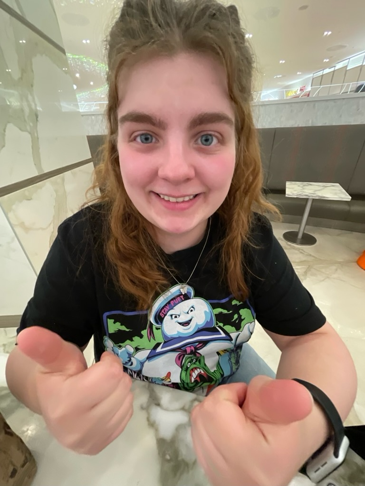

All About Me
My Full name is Maddison Miron. I am from a small town near Edmonton. I moved to Ottawa to be closer to my 3 siblings. I have 4 siblings but one lives in Halifax. I have a cat named Oatmeal. I call her Oatie. She is a tuxedo cat. Before coming to Algonquin I took a year off from school and worked as a nanny and baker.
My favourite colour is blue. My favourite show is Bob’s Burgers.I have many hobbies, and they are colouring, building Lego, and journaling. My journal is kinds like scrapbook and journal. Journaling I my favourite thing to do. I love coming home and putting on a movie or music and journaling. I find it very relaxing and a good creative outlet.
"Cloths are meant to fit us, not we are meant to fit into the clothes"
refinedbyv.com
My Skills
- Creativity
- Organization
Graphic Design Courses
- Computer Graphics
- Web Design
- Sketching
- Greek Mythology
- Communications for Graphic Design
- Graphic Dsign
- Typography